自主検証・架空データ。実務・受託の実績ではありません。ホテル・施設・住所はすべて架空です（地図の中心だけ実在の地域の座標）。動く画面ではなく、実際に動作させて確認した画面を、実測の記録として掲載しています。コード一式（PHP・MySQL・管理画面・テスト）はリポジトリにあります。
地図（Leaflet + OpenStreetMap）
DBの件数と、画面のマーカー数が一致することを確認しています。
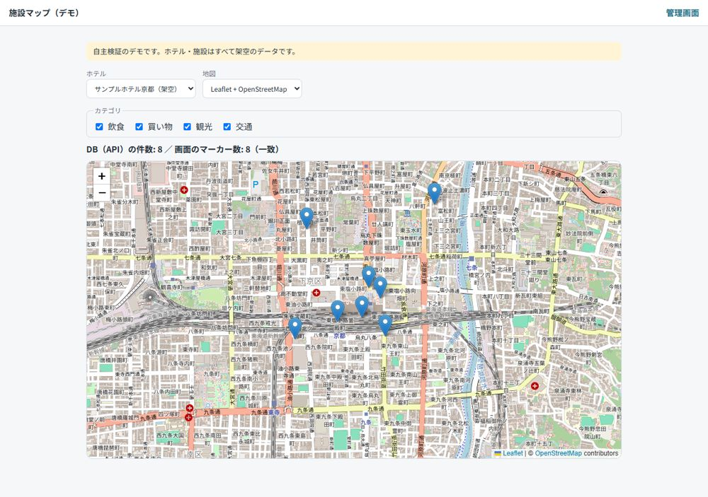
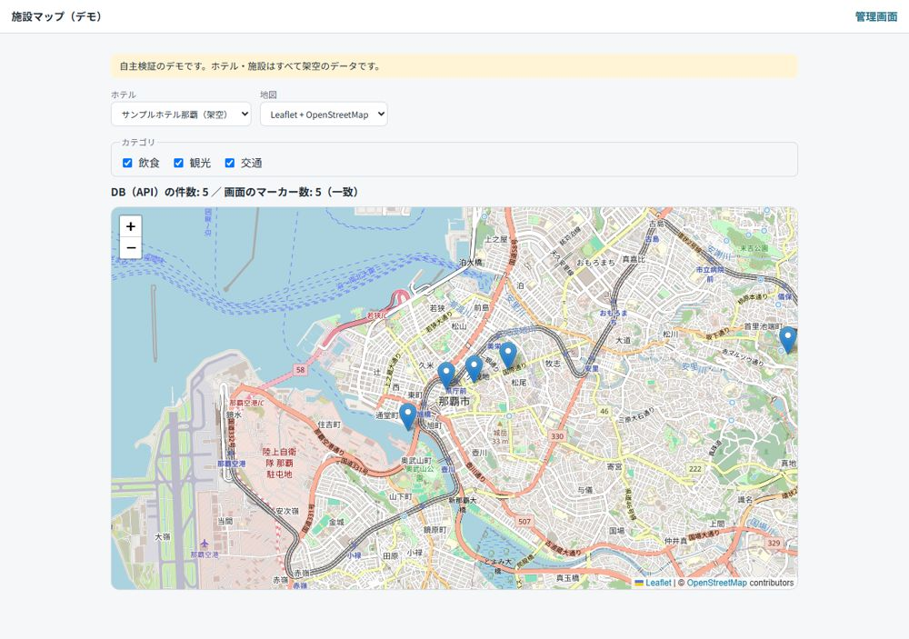
地図（Google Maps／制限つきAPIキーで確認）
Maps JavaScript APIを、リファラ制限・対象API制限つきのキーで動かしました。
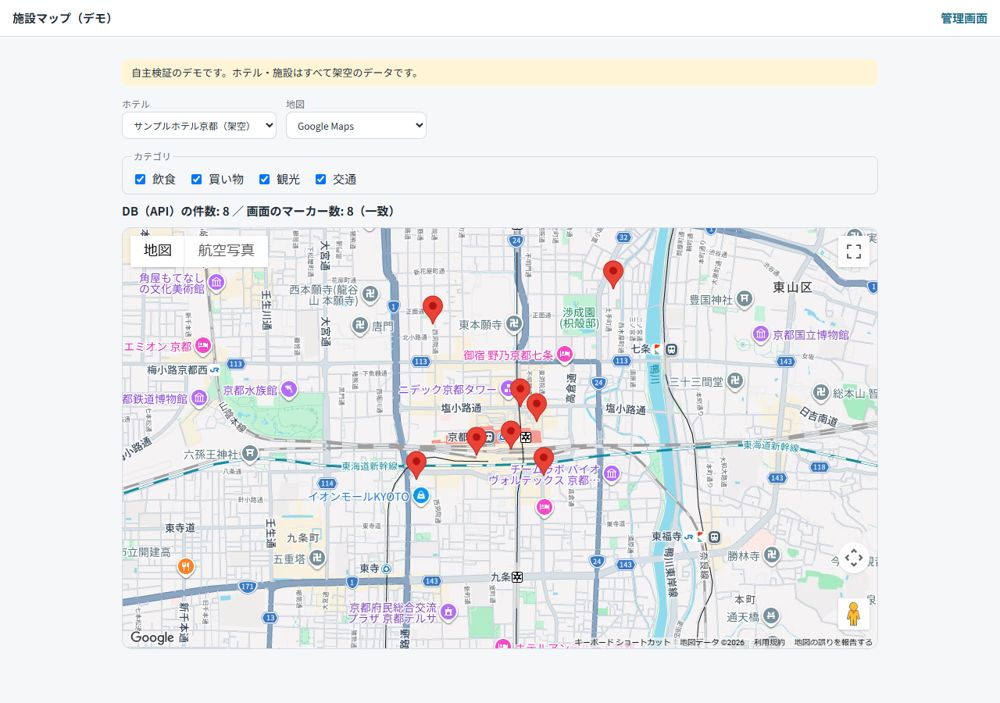
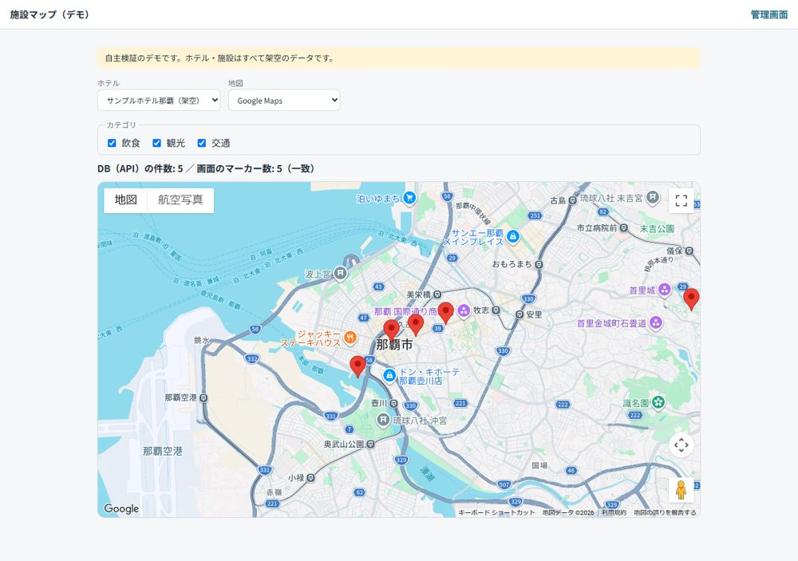
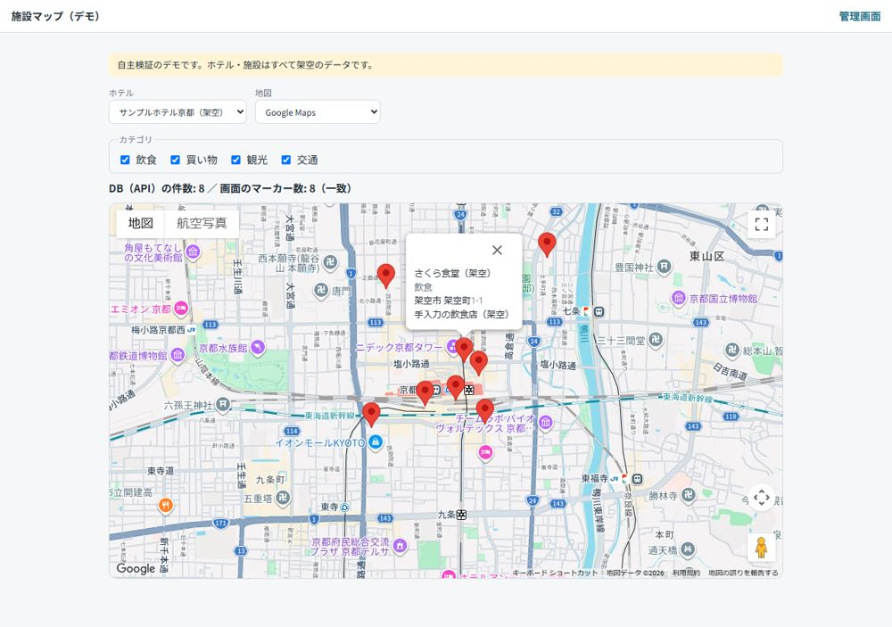
管理画面
ログイン・ホテル別設定・施設の編集ができます。未ログインの操作やCSRFトークンなしの送信は拒否します。
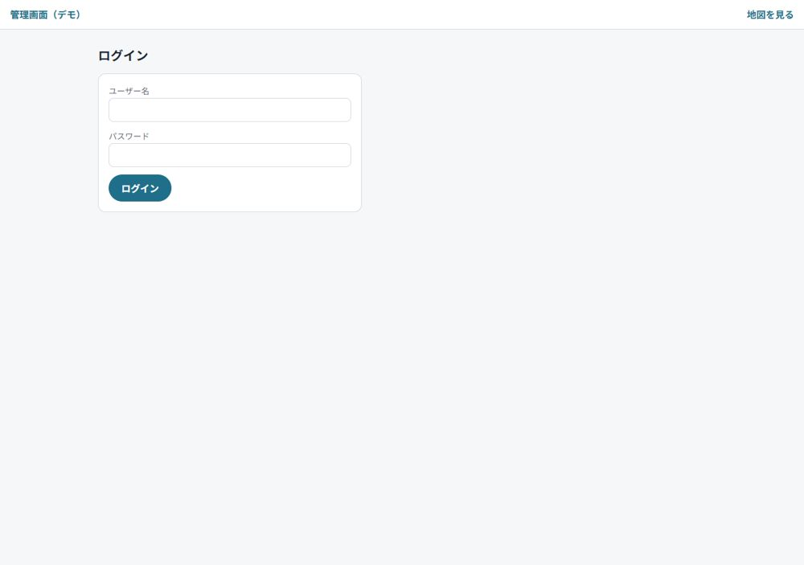
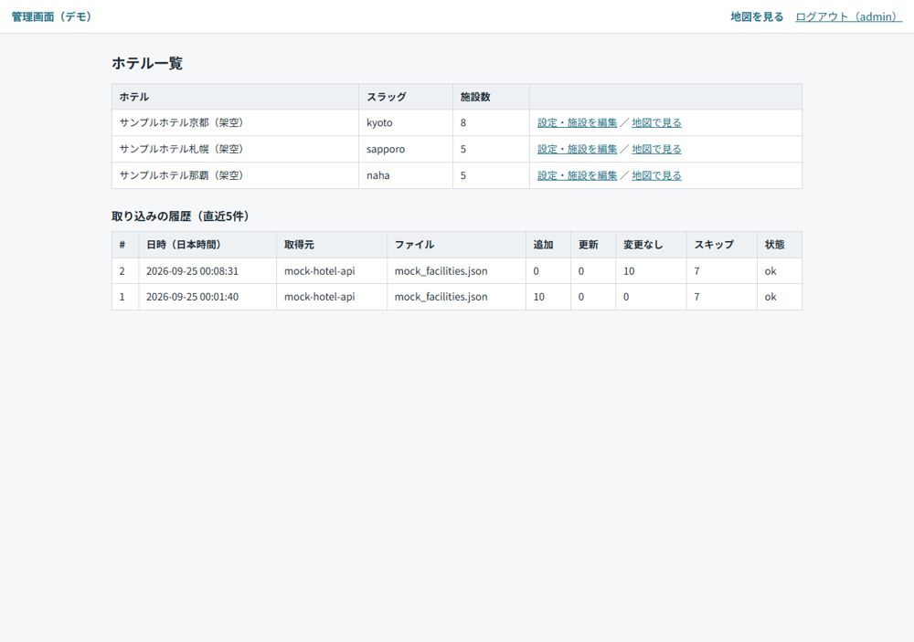
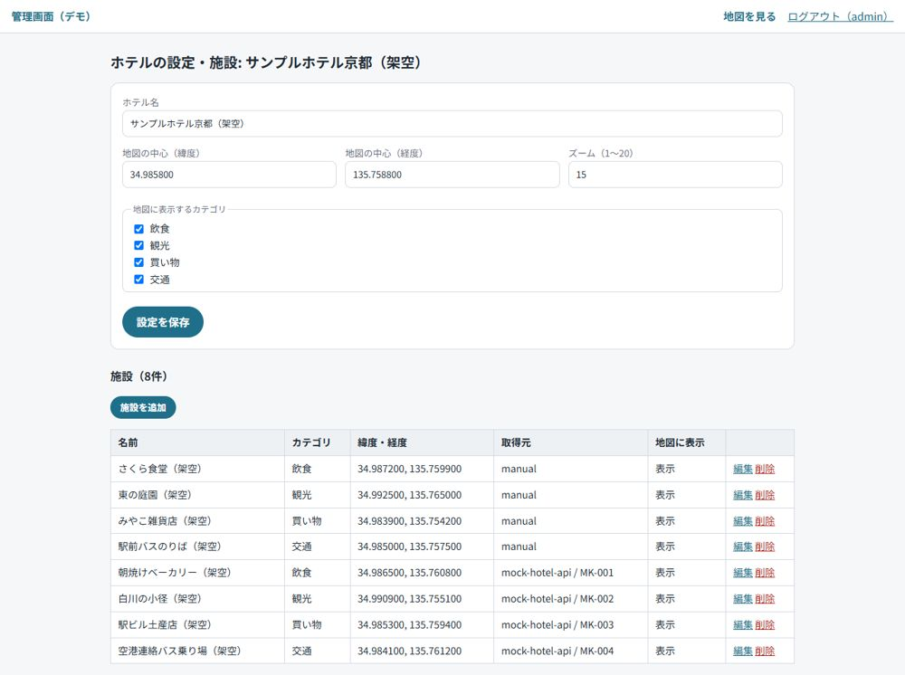
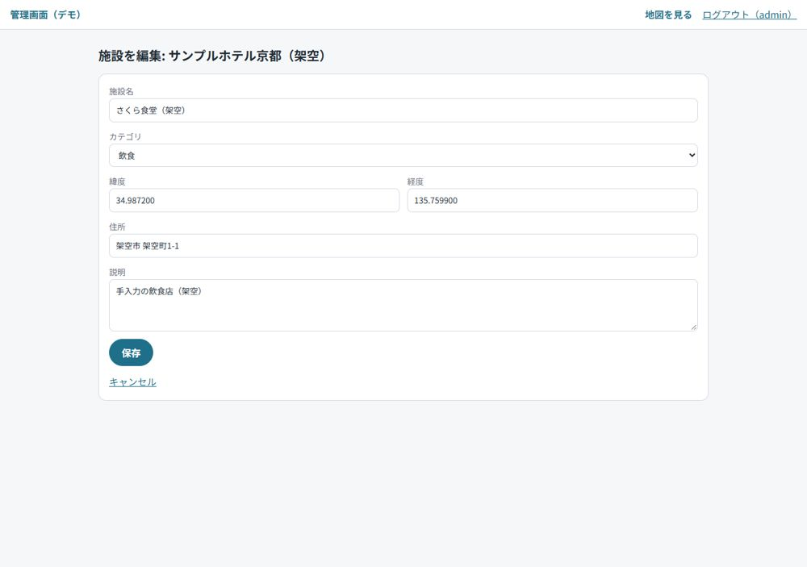
取り込みと検証
同じデータを2回流しても件数が増えません（冪等）。認可・CSRF・SQLの特殊文字など7か所をわざと壊し、テストが赤くなることも確認しました。
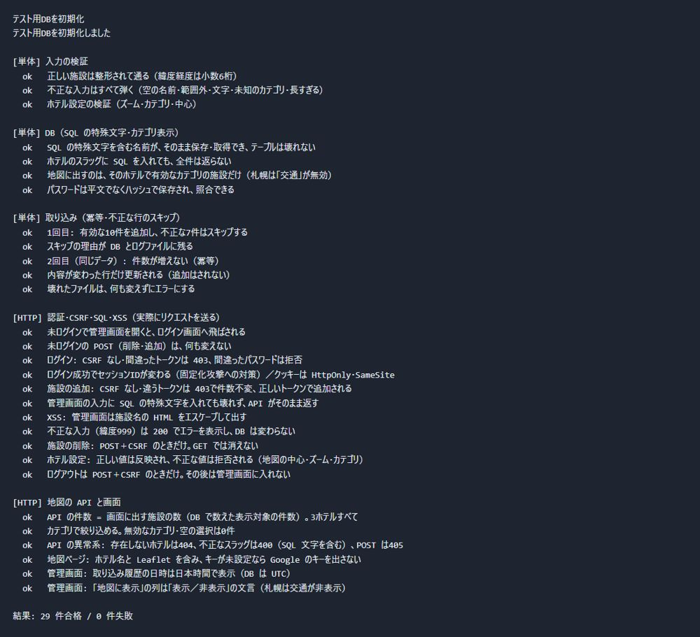
静的版（このページの元になったもの）
PHP・MySQL・APIキーを使わず、埋め込みデータだけで地図を再現した版です。
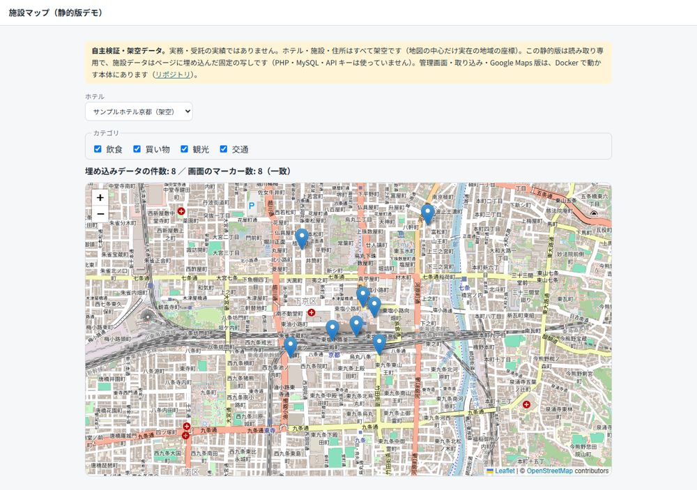
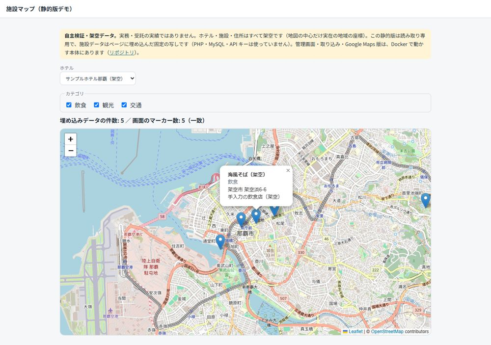